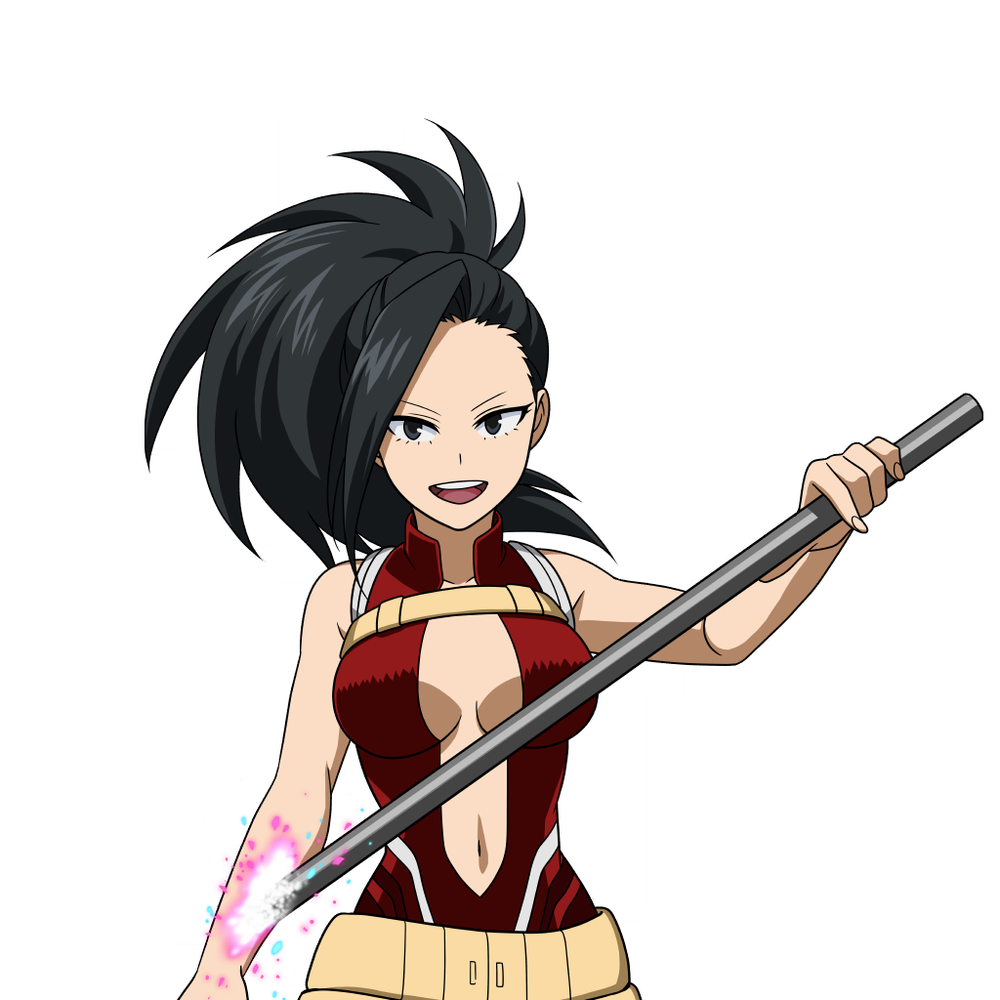

Momo Yaoyorozu
Nome de Herói: Creati
Individualidade: Creation – Pode criar qualquer objeto não-vivo a partir das células de gordura do seu próprio corpo exposto, desde que compreenda a estrutura molecular do item.
Perfil:
Vice-representante da classe. É rica, extremamente inteligente, educada e analítica, embora tenha sofrido um pouco com crises de autoconfiança no início.